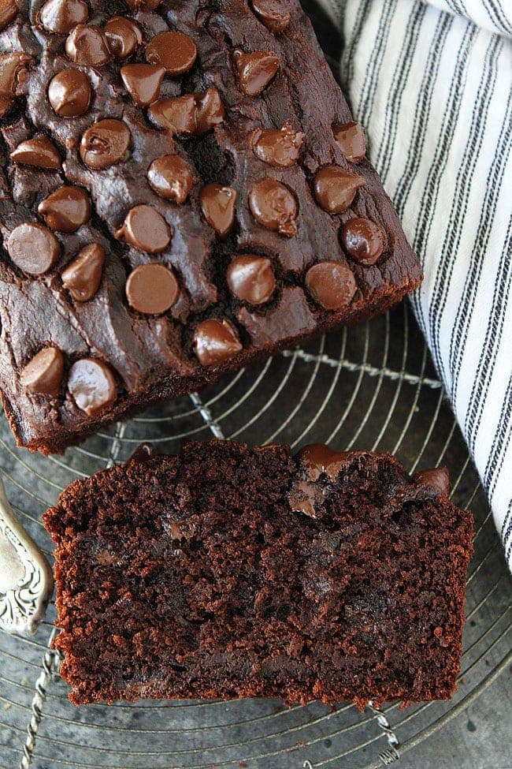

Aunt's Chocolate Pumpkin Loaf

Description
A simple recipe for chocolate pumpkin loaf.
Ingredients
- 1/4 cup unsweetened applesauce
- 1/3 cup unsweetened cocoa powder
- 1 1/2 cup all-purpose flour
- 1/2 teaspoon ground cinnamon
- 1/4 teaspoon ground nutmeg
- 1/4 teaspoon ground ginger
- 1/8 teaspoon ground cloves
- 3/4 teaspoon baking soda
- 3/4 teaspoon salt
- 1 cup canned pumpkin
- 1 cup sugar
- 3 tablespoons room-temperature almond butter
- 1 teaspoon pure vanilla extract
- 1/2-1 cup chocolate chips
- water
- cooking spray
Steps
- Wash hands thoroughly.
- Preheat oven to 350 degrees Fahrenheit.
- Boil water in microwave or tea kettle.
- Spray loaf pan with cooking spray.
- Combine applesauce and cocoa powder in large mixing bowl.
- In a medium bowl, add the flour, cinnamon, nutmeg, ginger, cloves, baking soda, and salt.
- Stir the ingredients in the medium bowl together and set aside.
- Add 1/3 cup boiling water to large bowl and stir until smooth.
- Add pumpkin, sugar, almond butter and vanilla extract to large bowl and mix well.
- Add 1/2 cup of the flour mixture to the chocolate mixture, gently stirring to mix everything.
- Stir in 1 tablespoon of boiling water.
- Add rest of flour mixture and an extra 1 tablespoon of boiling water to chocolate mixture.
- Stir batter until smooth.
- Pour in chocolate chips and stir them in a little bit.
- Pour batter into loaf pan and smooth it out with a spatula.
- Bake loaf for 55-60 minutes.
- Insert knife in center to check for doneness. Knife should come out mostly dry, but may have some melted chocolate chips on it.
- Let loaf cool in pan for about 10 minutes.
- Run knife around edges of pan to separate it from the bread, then turn pan upside down onto a plate or piece of foil.
- Serve warm or at room temperature.